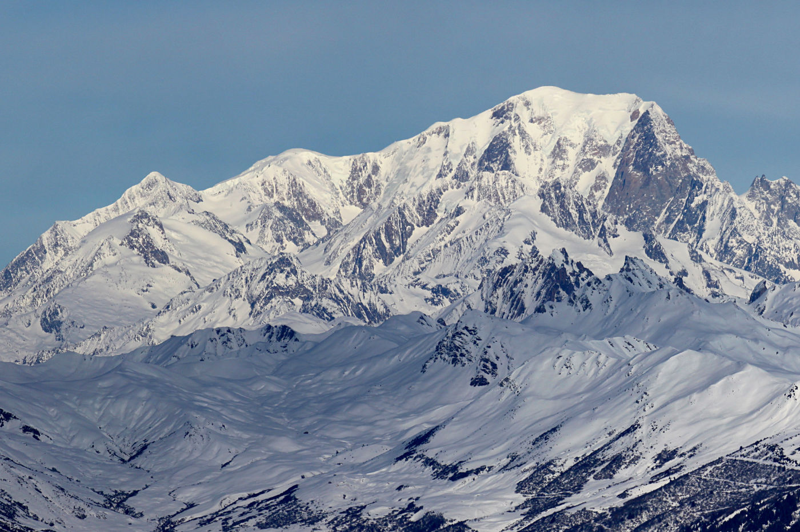
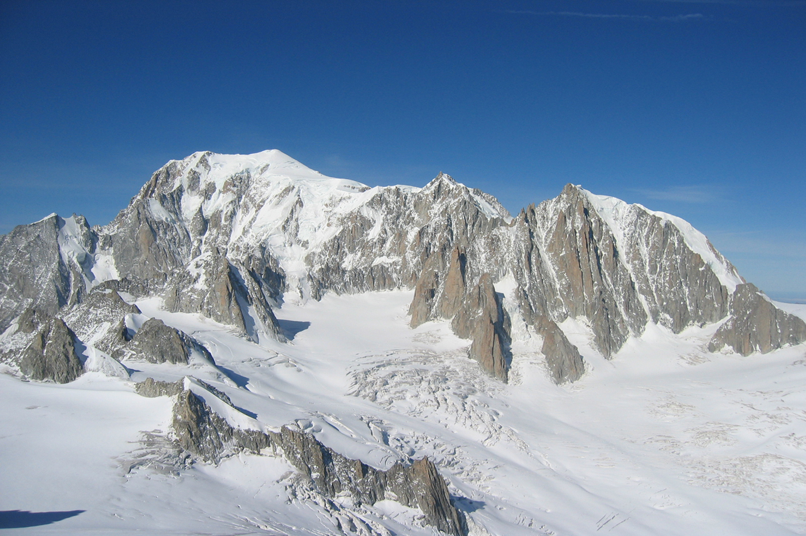
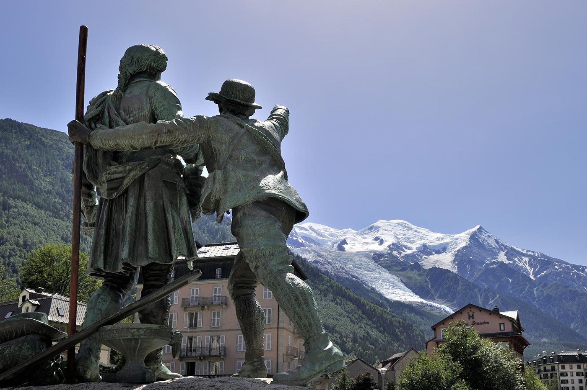

Mont Blanc
DECOUVREZ LE PLUS HAUT SOMMET D'EUROPE
LA CONQUÊTE DU MONT BLANC
Aussi menaçant que sublime, le sommet le plus élevé des Alpes est longtemps resté inexploré. La conquête du mont Blanc a été impulsée par le scientifique Horace Bénédicte de Saussure, curieux d’accéder à ce sommet visible depuis Genève dont il est originaire. Il offrirait une prime à qui trouverait une voie d’accès.
Son nom de Mont Blanc lui vient de Pierre Martel. Cet opticien et mathématicien, genevois également, fut inspiré par le dôme de neiges éternelles qui le recouvre.
Le 8 août 1786, les chamoniards Michel Paccard et Jacques Balmat, parviennent au sommet par la voie des Grands Mulets et l’année suivante, Horace Bénédicte de Saussure y monte à son tour assisté par Jacques Balmat. Ces ascensions historiques ont littéralement “ouvert la voie” à des générations de guides et d’alpinistes.
Source : chamonix.com